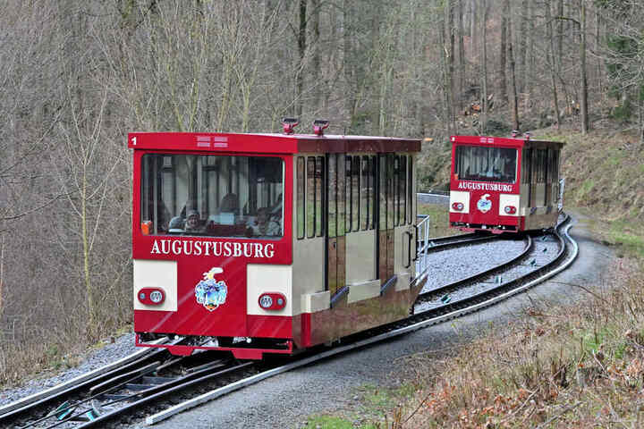

Die Drahtseilbahn

 Die Drahtseilbahn Augustusburg ist eine Standseilbahn und verbindet seit über 100 Jahren den Ortsteil Erdmannsdorf und den Bahnhof Erdmannsdorf-Augustusburg mit der Stadt Augustusburg und dem Schloss Augustusburg.
Die Drahtseilbahn Augustusburg ist eine Standseilbahn und verbindet seit über 100 Jahren den Ortsteil Erdmannsdorf und den Bahnhof Erdmannsdorf-Augustusburg mit der Stadt Augustusburg und dem Schloss Augustusburg.
Die Fahrt mit der Drahtseilbahn ist ein besonderes Erlebnis. In acht Minuten Fahrt geht es gleichzeitig an einem Seil gezogen bergauf und bergab.
Eröffnet wurde die Drahtseilbahn Augustusburg am 24. Juni 1911.
Technische Daten
| Streckenlänge | 1239,8 m |
| Höhenunterschied | 168,06 m |
| Neigung im Durchschnitt | 13,50 % |
| Neigung maximal | 20,14 % |
| Spurweite | 1000 mm |
| Fahrzeuganzahl | 2 |
| Baujahr Fahrzeuge | 1996 |
| Sitzplätze | 36 |
| Stehplätze | 39 |
| Eigenmasse | 9 t |
| Fahrgeschwindigkeit | 3 m/s |
| Fahrzeit | 8 Minuten |